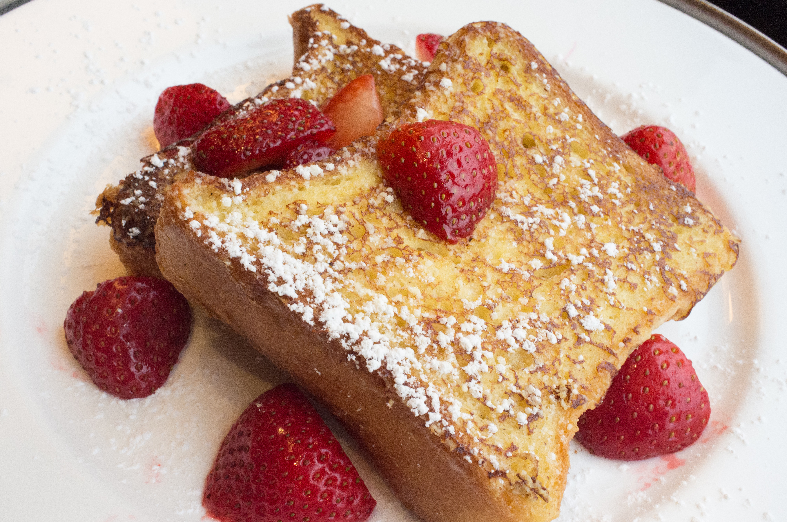

left Satisfied Breakfast: French toast to wake up to.
French Toast
Cited from easy recepies

image source: open license creative commons photo.
Ingredients
- 8 slices of bread
- 1/4 cup all purpose flour
- 2/3 of any milk
- 4 eggs
- 1/4 cup of granulated sugar
- 1/4 teaspoon salt
- 1 teaspoon cinnamon
- 1 teaspoon vanilla extract
Equipment
- Skillet pan
- Spatula
- Blender
- Large bowl
Directions
- Cook the skillet in medium heat.
- Blend the eggs milk flour sugar salt cinnamon and vanilla together until smooth.
- After blending mix the flour with the blended ingredients, if you prefer whisking then whisk until its combined.
- Dip the slices of bread into the batter making sure both sides are coated, then set on the skillet.
- Cook unitl both sides are golden brown. once done set them aside on a plate to be served with syrup or coated sugar for breakfast.
This page created as academic activity only.